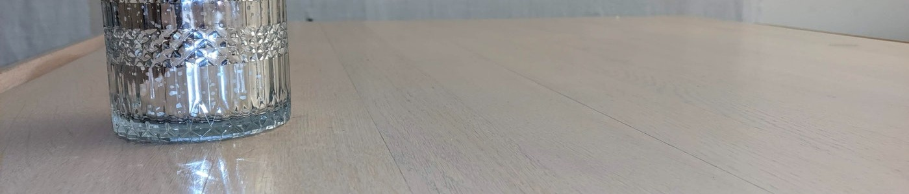

About me
My name is Sohaib Ibenhajene, an 18-year-old driven IT professional. Currently I am following the course Applied Computer Science (IT Factory) at the campus Thomas More Geel.
Background
My interest in IT came to fruition in 2017, when I had put together a desktop computer for the first time. I was scared of it at first because I thought something would definitely go wrong. But thanks to the miracle "Youtube", I was able to successfully build my first desktop PC. In 2019 I decided to study ITN (IT & Networks) at Heilig-Graf Patersstraat in Turnhout. I had chosen the course because it perfectly matched my interest in IT. During these 2 years I developed my basic IT skills like working with HTML & CSS, C#, MySQL and more.
Hobby's
From a young age I had a love for soccer, in fact I did it for 9 years. Now my interest is more in basketball, I do this mostly in my free time. Of course, gaming is also one of my hobbies, I mainly play games like Rocket League, Grand Theft auto V, Call Of Duty, ... I am also a big fan of Anime, my top 3 are: One Piece , Naruto and Attack On Titan.
